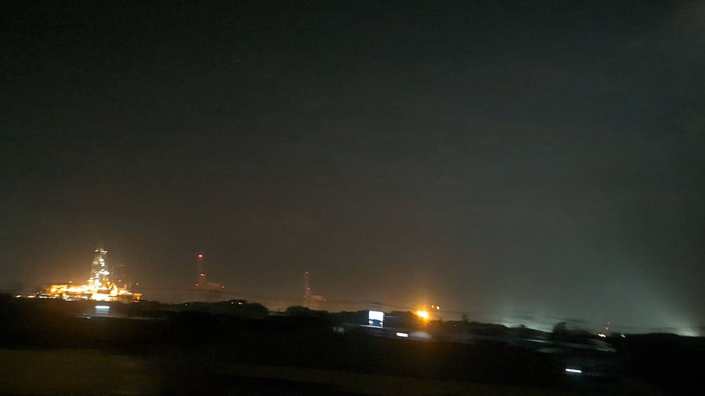

TOKAIDO SHINKANSEN WINDOW VIEW
When can you see Shimizu Port and CHIKYU from the Shinkansen?
Cranes and CHIKYU.

- Section
- Shin-Fuji → Shizuoka
- Seat side
- Seat A · sea side
- Timing
- About 50 minutes after leaving Tokyo on a Nozomi train
- Photos
- 3 photos
How to find Shimizu Port and CHIKYU
Between Shin-Fuji and Shizuoka, look from Seat A for Shimizu Port: gantry cranes, and sometimes the deep-sea drilling vessel CHIKYU. After Mt. Fuji, another kind of scale appears outside the window: mountains, sea, and industry all close together.
If you are traveling from Tokyo toward Shin-Osaka, start watching the Seat A · sea side window as you approach Shin-Fuji → Shizuoka. If you are traveling toward Tokyo, the order is reversed.
Why this view matters
Shimizu Port and CHIKYU is one of the window views that make the Tokaido Shinkansen more than a transfer. The train moves fast, so visibility depends on weather, seat position, and timing.
Shimizu Port and CHIKYU in photos

